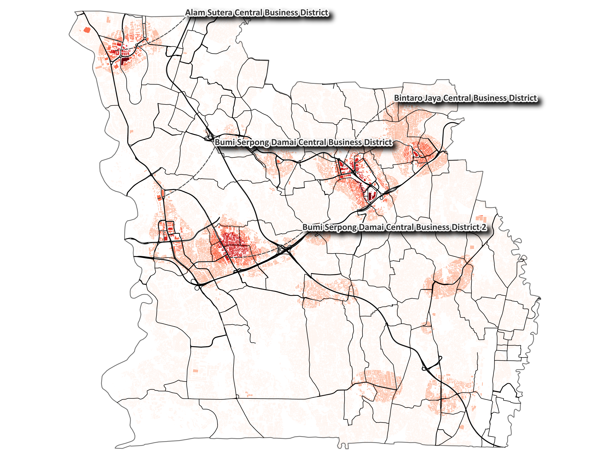
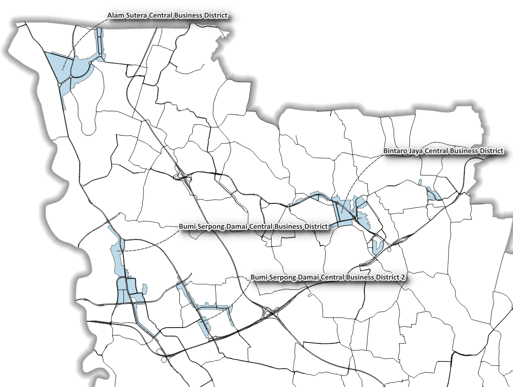
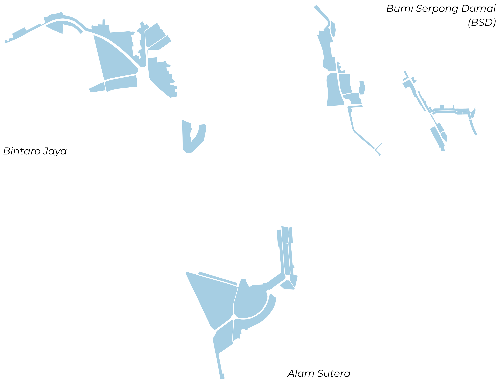
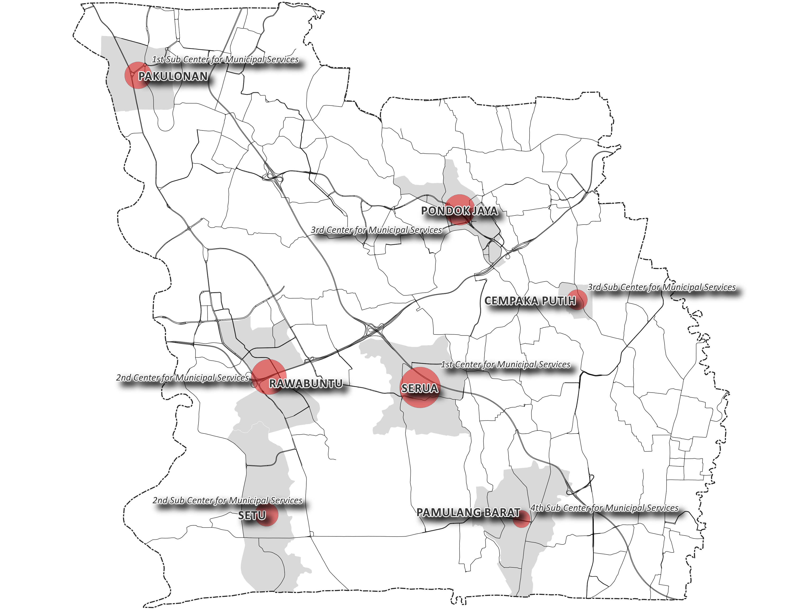

Delineating CBD in South Tangerang
Finding South Tangerang's Socio-economic Heart
Abstract
This study delineates the Central Business District (CBD) structure of South Tangerang through spatial analysis of weighted Points of Interest (POIs), building density, and road accessibility. Kernel Density Estimation (KDE) at an 800 m search radius reveals that high-order economic activity does not converge into a single downtown but distributes across three primary clusters: Bintaro Jaya, Bumi Serpong Damai (BSD), and Alam Sutera. The pattern constitutes a polycentric CBD shaped by new-town development and developer-driven economic corridors. The delineated clusters correspond to formally designated service centers in the Detailed Spatial Plan (RDTR, Perwal No. 118/2022), confirming alignment between observed spatial structure and statutory planning. The analysis concludes that spatial policy should manage multiple nodes rather than reinforce a single core.
1. Where Are the CBDs?
The results of the spatial analysis — weighted POIs, building density, and road accessibility — reveal that high-order activities converge into three primary clusters: Bintaro Jaya, Bumi Serpong Damai (BSD), and Alam Sutera.

2. A Different Kind of CBD
These clusters do not form a single CBD as commonly imagined. Instead, they constitute a polycentric CBD, shaped by new-town development and economic corridors driven by major developers.

3. Three Urban Cores

| Indicator | Bintaro Jaya | Bumi Serpong Damai (BSD) | Alam Sutera |
|---|---|---|---|
| Population served | 31,054 people | 42,556 people | 36,968 people |
| CBD area | 79.67 Ha | 103.65 Ha | 102.69 Ha |
| Average building height | 12 m | 10 m | 10 m |
4. Urban Form
The CBD morphology differs from classical models. Vertical development is limited, and economic activity is expressed through horizontally distributed commercial strips, dominated by modern shophouses and supported by arterial road networks.

5. Reality on the Ground
The spatial structure reveals a city shaped by infrastructure and accessibility, where mobility patterns are strongly car-oriented.

6. Planning Framework
The clusters align with the Detailed Spatial Plan (RDTR) (Perwal No. 118/2022), corresponding to designated service centers:
| Cluster | District | Designated service center |
|---|---|---|
| Bintaro Jaya | Pondok Jaya District | PPK III |
| Bumi Serpong Damai (BSD) | Rawabuntu District | PPK II |
| Alam Sutera | Pakulonan District | Sub-PPK I |
This confirms that the observed spatial patterns are consistent with formal planning structures.

Service-Center Definitions (Useful Note)
- PPK II (City Service Center II): government activities, public services, trade and services at regional and national scales, and housing.
- PPK III (City Service Center III): public services, trade and services at regional and national scales, and housing.
- Sub-PPK I (Sub–City Service Center I): public services, trade and services, and housing.
7. Planning Implication
Spatial policy should not reinforce a single downtown. Instead, it must manage multiple nodes through Floor Area Ratio (FAR) control, building-height regulation, parking strategies, and improved accessibility systems.
8. Methodological Reflection
CBD delineation is sensitive to weighting schemes, KDE radius (800 m), and data quality. Future work should incorporate sensitivity testing, mobility validation, and transit-based accessibility metrics.
Conclusion
South Tangerang is a developer-driven polycentric city, where economic intensity is distributed across nodes rather than concentrated in a single core.